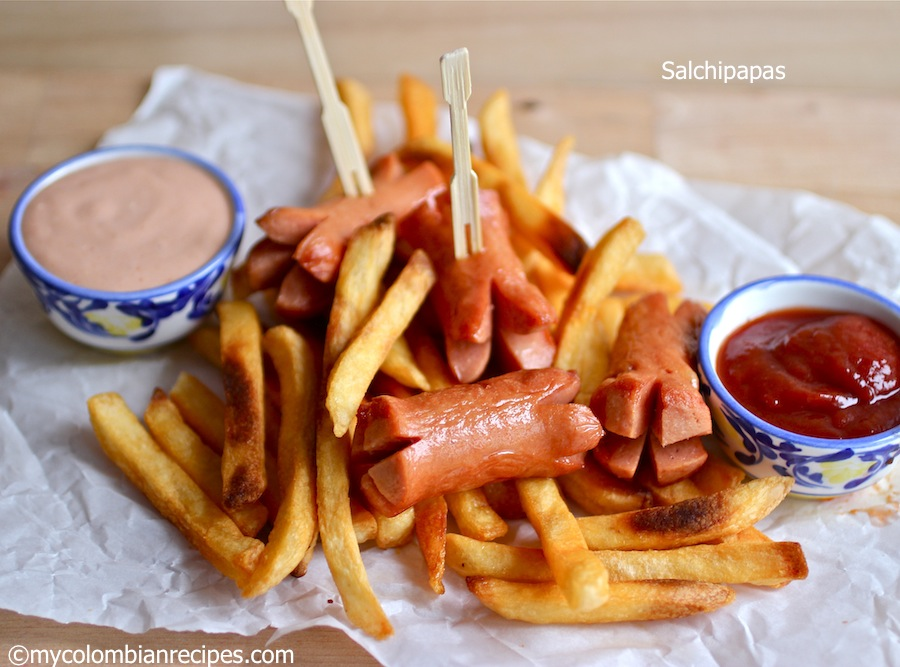
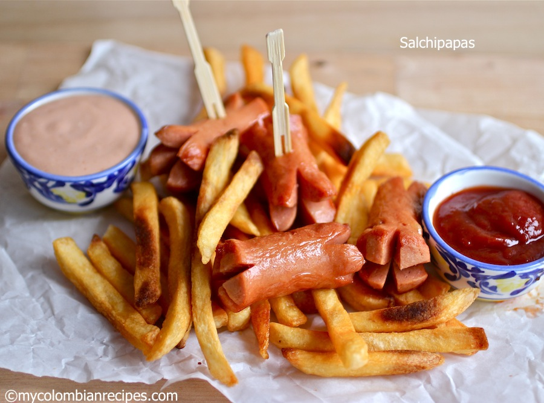

El Colorado
La Hueca el Colorado, ubicado en el sur de quito, en en sector de la villaflora, sus horarios de atencion es de 9am hasta las 6pm, su comida es muy deliciosa y su servicio es muy bueno
La Hueca el Colorado, ubicado en el sur de quito, en en sector de la villaflora, sus horarios de atencion es de 9am hasta las 6pm, su comida es muy deliciosa y su servicio es muy bueno
Las Salchipapas de Don Juan, ubicado en el centro de quito, sus horarios de atencion es de 9am hasta las 6pm, su comida es muy deliciosa y su servicio es muy bueno
La comida rápida es un estilo de alimentación donde el alimento se prepara y sirve para cliente de manera rápida en locales de comida al paso.
El pollo frito es un plato compuesto por trozos de carne de pollo tierno, a veces enharinados o rebozados, y luego fritos. El empanado añade una corteza exterior crujiente que evita la pérdida de los jugos pero también absorbe la grasa usada al freír. Lo que distingue al pollo frito de otras frituras de pollo es que habitualmente se corta por las articulaciones, dejando los huesos y la piel intactos. La piel crujiente bien condimentada, sin exceso de grasa, es el rasgo distintivo de un pollo bien frito. Se puede aderezar con salsa tártara, kétchup o salsa picante.
Una hamburguesa es un sándwich hecho a base de carne molida o de origen vegetal, aglutinada en forma de filete cocinado a la parrilla o a la plancha, aunque también puede freírse u hornearse. Se presenta en un pan ligero partido en dos que posee forma de óvalo. Suele estar acompañada de aros de cebolla, hojas de lechuga, alguna rodaja de tomate, láminas de encurtidos y papas fritas. Se suele aliñar con algún condimento, como puede ser la salsa de tomate, la mostaza, el relish, el kétchup o la mayonesa, entre otros.
es un alimento en forma de bocadillo que se genera con la combinación de una salchicha del tipo salchicha de Frankfurt o vienesa hervida o frita, servida en un pan con forma alargada que suele acompañarse con algún aderezo, como salsa de tomate, mostaza, jalapeño, cebolla, y chucrut. El tipo de salchicha empleado en la elaboración del alimento puede diferir según los gustos de la región y de los ingredientes disponibles.

 

Ven que te esperamos con los mejores productos de calidad y contamos con todas las medidas de bioseguridad